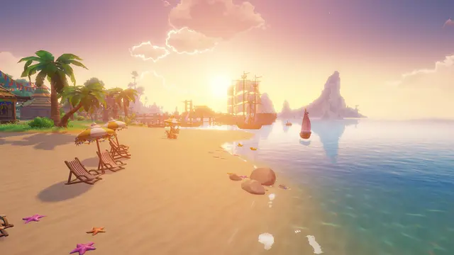
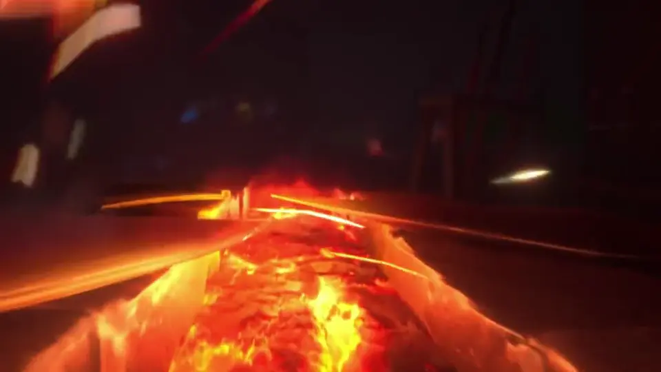
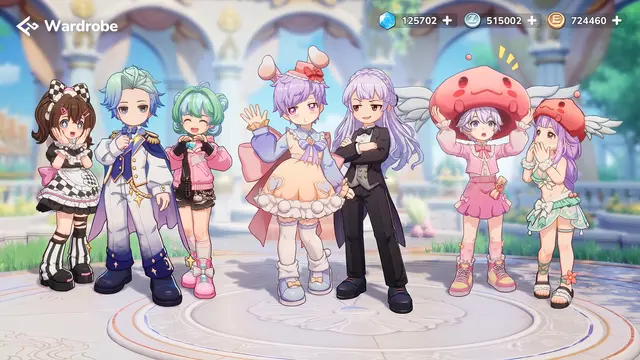
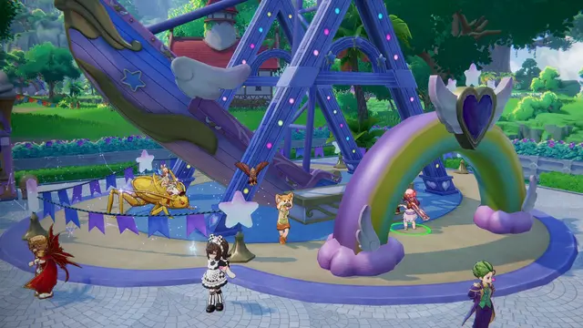
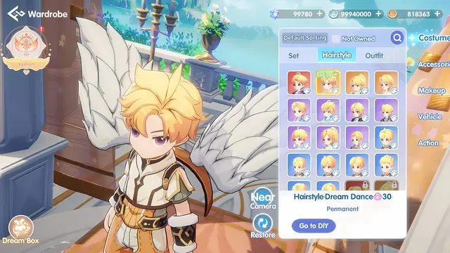
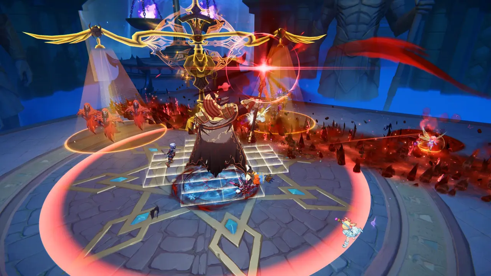

AFKEarn while offline
Log off and your character keeps hunting. Resources pile up while you sleep or work.

Your character keeps hunting while you're away. Free stat resets. Safe refining. Up to 120 FPS on PC.
You loved RO. You don't have 6 hours a night anymore. These four systems are why this version fits your schedule.

AFKLog off and your character keeps hunting. Resources pile up while you sleep or work.
 Respec
RespecMessed up your build? Reset stats and skills for free. No character is ever "ruined".

RefineA failed refine never drops your level and never destroys gear. Push to +15 without fear.
 Job change
Job changeTank today, heal tomorrow. Master Swordman, Thief, Mage and more on one character.
Hit refine. When it fails, your gear stays at its level and stays in your bag.
Drag the slider: the longer you're away, the more your bag fills.
Illustration only. Real rates depend on the game.
The idle system covers the repetitive farming. Builds, bosses, guilds and trading still need you at the keyboard.
Builds, MVP fights, fashion and vending, in 2 minutes 30.

Climb rooftops, swim the coast, fly between islands. Same cute classic style, rebuilt with modern visuals and sound.






Defeat an MVP and make it your personal mount. Ride the strongest monster in the world.
Auction rare drops at your price, haggle, flip items. Go from street vendor to trade tycoon.
Up to 120 FPS, so open-world PvP and dungeon combos stay fluid.

Hold the boss's attention and soak the hits while your party lays into it.
The game uses a Gravity account inside its launcher. Here's exactly what happens after you click.
Click "Play free on Steam", then "Play Game". Steam installs the client (about 30 GB).
The game opens a Gravity launcher. Sign up or link an account you already have. It's free.
Choose a server, make your character and you're in. Already play on mobile? Same progress.
These are the requirements listed on Steam. Check them now so the 30 GB download isn't wasted.
| Part | Minimum | Recommended |
|---|---|---|
| Memory (RAM) | 12 GB | 16 GB |
| Storage | 30 GB free | 30 GB free |
| Network | Broadband | Broadband |
| System | Windows 10 or newer | Windows 10 or newer |
| CPU / GPU | Not yet listed on Steam | |
Pick one to see if you're good to go.
Downloading and playing cost nothing. The game sells optional items in its shop. Decide for yourself what you spend.
The launcher asks you to create or link a free Gravity account on first start.
Full audio in English, Thai, Indonesian and Simplified Chinese.
Yes, it's free to download and play. It's free-to-play with an in-game shop, so some items are sold for real money. Nothing is charged when you install.
The PC version runs through Gravity's launcher. On first start you create or link a free Gravity account. It's the same account that keeps your progress synced across devices.
Idle mode earns resources while you're offline, so you spend less time farming. Builds, MVP hunts, party instances, guild content and trading are still played by you.
Yes. Progress is synced between phone, tablet and PC. Log in with the same account and pick up where you left off, with up to 120 FPS on PC.
No. Ragnarok: The New World is a separate, officially licensed game, published by Gravity Game Vision Limited. It's the first open-world RO, with its own servers and progress.
Reviews are split. As of 14 Nov 2026, Steam shows Mostly Negative overall (33% of 1,222) and Mixed in the last 30 days (58% of 56). Most complaints are about the in-game shop and auto features; players who like it praise offline progress and nostalgia. Read a few on Steam and judge for yourself.
You need at least 12 GB of RAM (16 GB recommended), 30 GB of free space, Windows 10 or newer and a broadband connection. See the requirements table.